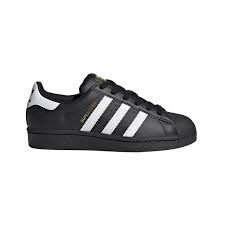
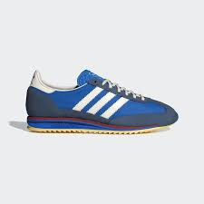
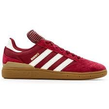
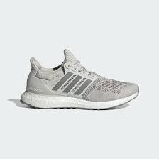

Popular Colorways : Carbon /Cloud White / Lucid Blue/ Impact Orange
Product Description :
The Adezero are built for mid- to long-distance running.
They bring a race-day feel to training with a propulsive feel that comes from the glass-fibre infused ENERGYRODS 2.0, which limit energy loss underfoot.
They're fast, but that does not come at the cost of durability — the midsole layers ultra-light LIGHTSTRIKE PRO cushioning with a new version of durable LIGHTSTRIKE 2.0 EVA.
Adidas Superstars

Price: £95 apprx
Popular Colorways : Core Black/Cloud White
Product Description :
The iconic adidas superstars have a smooth leather upper and rubber shell toe evoke memories of skateboard, basketball courts and city streets.
The padded tongue and collar add comfort for all-day wear while the textured rubber outsole provides grip. Whether you're skating at the skate park or hitting the town,
the adidas Superstar shoes have the versatility and retro appeal to take you there in classic style.
Adidas sl72

Price: £85 apprx
Popular Colorways : Blue / Core White / Better Scarlet
Product Description :
The adidas SL 72 boasts adidas' signature cushioning technology in the midsole, ensuring all-day wearability.
The rubber outsole provides excellent traction, while the low-profile design offers versatility for various casual occasions.
The SL 72 was first designed for track athletes looking to shave seconds off their time.
Today, its lightweight build and sleek profile make it ideal for city exploration. The retro nylon upper has soft suede accents.
Adidas Busenitz

Price: £80 apprx
Popular Colorways : Collegegiate Burgundy / Cloud White / Gold Metallic
Product Description :
The Adidas Busenitz is a skate shoe classic and is the result of a close ongoing collaboration with Dennis Busenitz.
This signature adidas skate shoe takes the legendary Copa Mundial and makes it skate-ready with supportive GEOFIT™ collar cushioning, recessed eyelets, and an extra set of laces.
Adidas Ultraboost

Price: £160 apprx
Popular Colorways : Grey One / Grey Three / Grey One
Product Description :
What stands out in the adidas Ultra Boost 1.0 is its commitment to sustainability, as its upper incorporates a high-performance yarn made from at least 50% Parley Ocean Plastic, repurposed from plastic waste intercepted in remote coastal areas and shorelines, preventing ocean pollution.
The remaining 50% of the yarn is recycled polyester. Additionally, the adidas Ultraboost 1.0 shoes are designed to keep you comfortable. An adidas PRIMEKNIT upper gently hugs your feet while BOOST on the midsole cushions from the first step to the last mile.
The Stretchweb outsole flexes naturally for an energised ride, and Continental™ Rubber gives you the traction you need to keep that pep in your step.